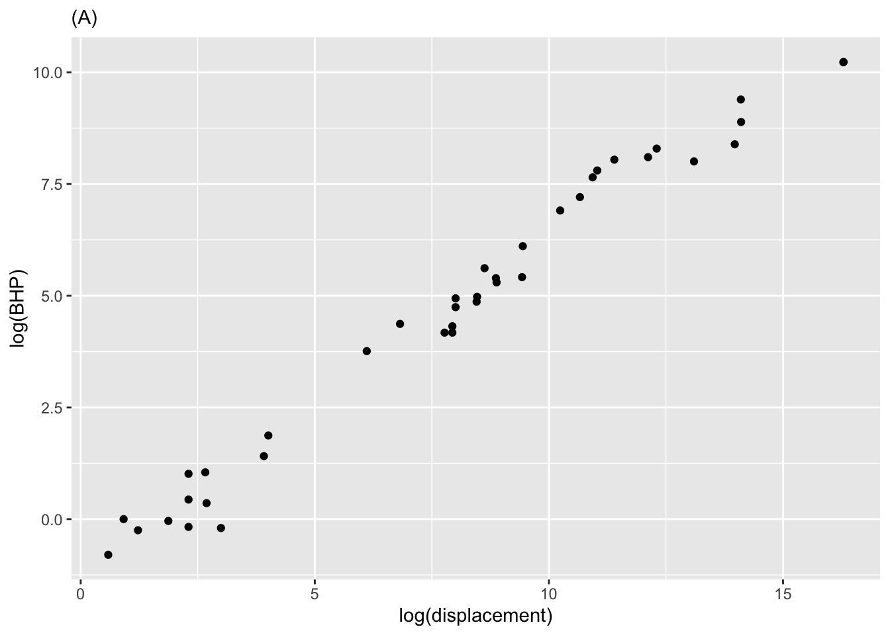
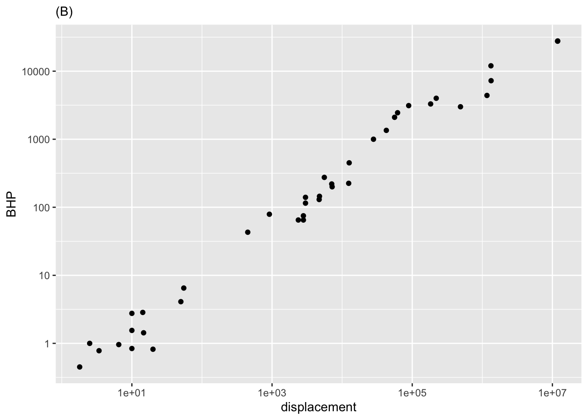
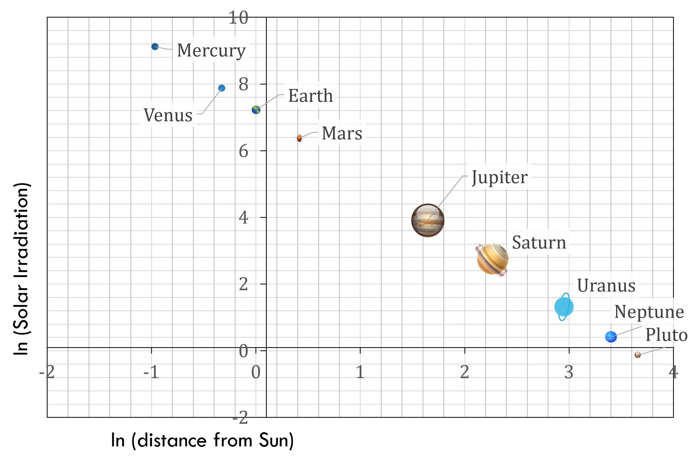
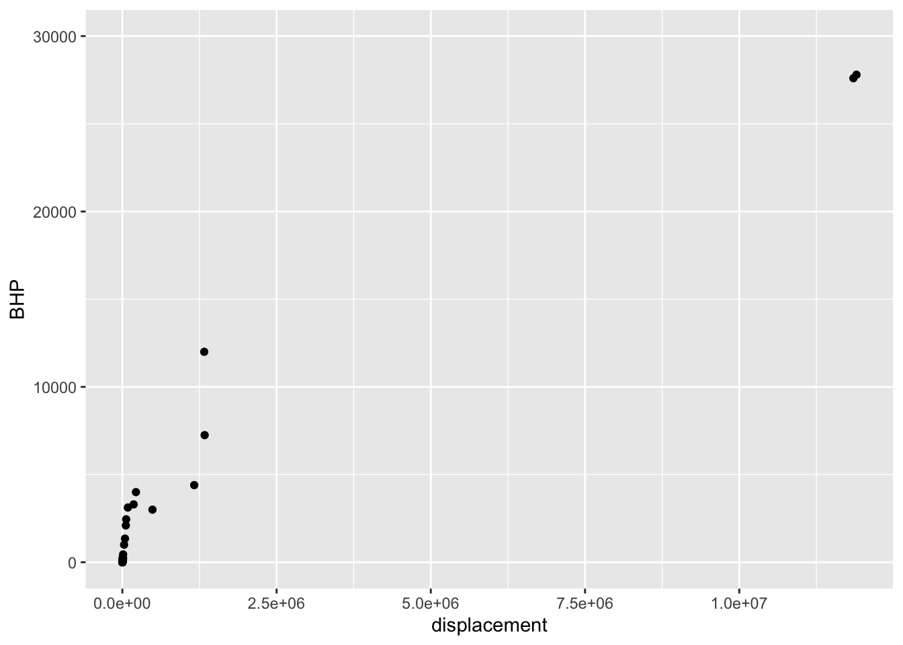
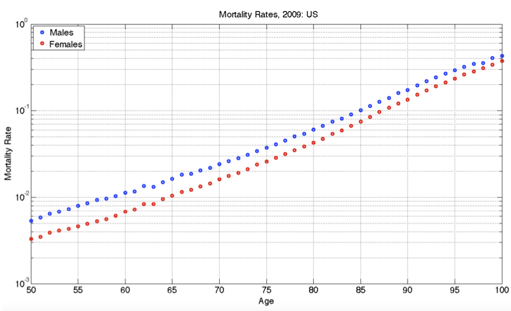
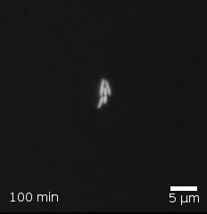
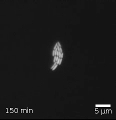
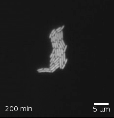
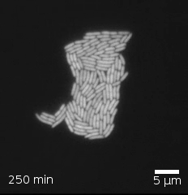

question id: daily-digital-06-QA5
Chap 14 Exercises
\[ \newcommand{\dnorm}{\text{dnorm}} \newcommand{\pnorm}{\text{pnorm}} \newcommand{\recip}{\text{recip}} \]
Exercise 1
Active R chunk 1 contains commands to plot data from Robert Boyle’s (1627-1691) lab notebook recording his experiments on the pressure and volume of gasses. Note that by removing the # comment markers, you can set one or both axes to a logarithmic scale.
In this exercise, you will use your R console to carry out some calculations with Boyle’s historic data on pressure and volume of gasses.
The commands in Active R chunk 1 plot out Boyle’s data. The gf_lm() layer adds a graph of the best straight-line model to the plotted points. Recall that the # symbol turns what follows on the line into a comment, which is ignored by R. By removing the # selectively you can turn on the display of log axes.
Run the code in Active R chunk 1 three times, once each using linear, semi-log, and log-log axes. Based on these three plots, and the straight-line function drawn, which of these is a good model of the relationship between pressure and volume?
linear exponential power-law
Exercise 2 The two panels in Figure 1 h show the power (BHP) vs displacement for three dozen internal combustion engines.


- What relationship is shown in Figure 1 (A)?
\(BHP\equiv m\cdot displacement+b\)
\(\ln (BHP)\equiv m\cdot displacement+b\)
\(BHP \equiv m\cdot \ln (displacement) +b\)
\(\ln (BHP)\equiv m\cdot \ln (displacement) +b\)
question id: csbe-1
- What’s the key difference between the two panels in Figure 1?
Figure (A) is a semi-log plot, and Figure (B) is a log-log plot.
Figure (A) uses linear axes to show the log-transformed data, while Figure (B) uses log-log to show the original data.
There is no difference!
question id: csbe-2
Exercise 3

- Consider the axis scales shown above. Which kind of scale is the horizontal axis?
linear logarithmic semi-logarithmic log-log
question id: fish-walk-green-QA1
- Which kind of scale is the vertical axis?
linear logarithmic semi-logarithmic log-log
question id: fish-walk-green-QA2
- Given your answers to the previous two questions, what kind of plot would be made in the frame being displayed at the top of this question?
semi-log log-log linear-linear
question id: fish-walk-green-QA3
Exercise 4 The surface area \(S\) of a mammal is reasonably well approximated by the function \[S(M) \equiv k M^{2/3}\] where \(M\) is the body mass (in kg) and the constant \(k\) depends on the particular species under consideration.
Note that \(M^{2/3}\) is not an allowed arithmetic operation. \([M] = \text{mass}\), and mass, like any other dimension, cannot be raised to a non-integer power. More properly, the expression should be written \[\left(\frac{M}{1\ kg}\right)^{2/3}\] The division by “1 kg” renders dimensionless the quantity in the parentheses: \[\left[\frac{M}{1\ kg}\right] = 1\] to render the quantity both dimensionless and unitless, \(M\) should be specified in kg. The usual practice is to skip the “1 kg” business and simply say, “Where \(M\) is in kg.” You will see such notation frequently in your career and should take care to use the indicated units.
Here is an interactive R chunk for any calculations you need.
- Consider a baby and an adult. The adult’s mass is \(8\) times greater than the baby’s. Then the adult’s surface area is …?
The same as the baby’s
1.5 times of the baby’s
4 times the baby’s
8 times the baby’s
question id: crow-mean-dress-1
- Consider a human of body mass 70 kg with a skin surface area of 18,600 cm2. Which of the following units for the constant of proportionality \(k\) is correct?
cm\(^2\) kg\(^{-2/3}\) cm\(^2\) cm\(^2\) kg\(^{2/3}\) kg\(^{-1}\)
question id: crow-mean-dress-2
- In the units of part (B), which value is \(k\) closest to?
1 10 100 1000
question id: crow-mean-dress-3
The numerical value of the constant \(k\) changes depending on what units you want to express it in. The value you found in part (C) works for masses stated in kg and skin areas in cm\(^2\).
Suppose you want to figure out a value of \(k'\) that you can use in the formula for people who are used to talking about skin area in square inches and mass in pounds. The units of \(k\) are cm\(^2\), and we want the units of \(k'\) to be in\(^2\). That part is easy: just multiply \(k\) by two flavors of one to change the units from cm to inches, like this:
\[k' = k\ \underbrace{\frac{\text{in}}{2.6 \text{cm}}}_\text{flavor of 1}\ \underbrace{\frac{\text{in}}{2.6 \text{cm}}}_\text{flavor of 1} = \frac{k}{2.6^2}\] where the flavor of 1 reflects that 1 inch is 2.6 cm.
But this is not the whole story. We have to be very careful in dealing with the \(\left(\frac{M}{1 kg}\right)^{2/3}\). Translated to pounds, \(M = 70\ \text{kg} = 154\ \text{lbs}\), since, in the rough-and-ready way everyday people express themselves, 1 kg \(\approx\) 2.2 lbs. But people use it as if it were mass. A mass of 70 kg corresponds to about 4.8 slugs. In Earth’s gravity, the mass 4.8 slugs produces a force of 154 pounds.]
To be precise, pounds is a measure of force, not mass. Mass in the traditional system has a unit name that few people recognize: slugs
Plugging in \(M=154\) lbs makes the power-law part of the formula for skin area \[\left(\frac{154\ \text{lbs}}{1\ \text{kg}}\right)^{2/3}\] You cannot take (pounds)\(^{2/3}\) or (kg)\(^{2/3}\); you won’t get a sensible unit in either case. But [pounds/kg] = [1], so taking the two-thirds power of the ratio is perfectly legitimate.
Still, there is a problem. Multiplying \(k\ 154^{2/3} (\text{lbs}/\text{kg})^{2/3}\) has the right dimension, but strange-looking units that have nothing to do with skin area.
The resolution to this paradox is to multiply \(\frac{154\ \text{lbs}}{1\ \text{kg}}\) by an appropriate flavor of 1 to render the dimensionless quantity unitless as well as dimensionless. This flavor will be \(\frac{1 \text{kg}}{2.2 lbs}\), giving a formula for skin area in square inches:
\[S_{in}(M)= \frac{k}{2.6^2}\left(\frac{154\ \cancel{\text{lbs}}}{1\ \bcancel{\text{kg}}}\ \underbrace{\frac{1\ \bcancel{\text{kg}}}{2.2\ \cancel{\text{lbs}}}}_\text{flavor of 1}\right)^{2/3} = \underbrace{\frac{k}{2.6^2}\ \left(\frac{1}{2.2}\right)^{2/3}}_{k'\ \text{for inches and pounds}} 154^{2/3}\]
Optional challenge) Assuming that \(k = 1000 \text{cm}^2\) when specifying mass in kilograms, what should be the numerical value of \(k'\) in square-inches that should be used when body mass is given in pounds?
8.7 87 870 8700 87000
question id: crow-mean-dress-5
Exercise 5 Transistors are one of the basic building blocks of modern electronics. (Here is a 2:00 min Video: Inside a Microchip, YouTube.) Figure 3 shows the increase in the count of transisters on microchips has increased over time.
- What sort of frame is the data being plotted in?
linear log-log semi-log
question id: srsm-1
- How many decades are shown on the vertical axis?
2.5 4.3 7.7 9.1
question id: srsm-2
- Seeing the data as roughly a straight line in the graphics frame, what sort of function is appropriate to model the number of chips versus year?
linear exponential power-law
question id: srsm-3
Roughly speaking, there were about 5000 transistors per chip in 1970 compared to about 10,000,000,000 in 2020.
- How many doublings are involved in going from 5000 to 10,000,000,000 transistors. (Hint:
log2()is an appropriate function to use in the calculation.)
16.8 20.9 26.2 31.5
question id: srsm-4
How many years per doubling in going from 5000 to 10,000,000,000 transistors over the 50 years from 1970 to 2020?
1.7 2.0 2.4 2.7
question id: srsm-5
Credit: Math 141Z/142Z 2021-2022 Development team
Exercise 6

Which of the following is the most appropriate form for modeling the relationship evident in Figure 4?
\(SI\equiv mD+b\)
\(\ln (SI\equiv mD+b\)
\(SI \equiv m\ln (D)+b\)
\(\ln (SI)\equiv m\ln (D)+b\)
question id: bssc-1
Exercise 7 The data frame SSA_2007 comes from the US Social Security Administration and contains mortality in the US as a function of age and sex. (“Mortality” refers to the probability of dying in the next year.)
Run the following command to see the organization of the data.
Once you understand the data organization, try this command to make a plot of mortality versus age:
An error message! That’s because there is a slight mistake in the way the command is written. To figure out what’s wrong, read the error message, check the variable names, and so on until you successfully make the plot.
- What was the mistake in the plotting command in the above code box?
Variable names didn’t match the ones in the data.
The tilde in the argument color = ~ sex
The data frame name is spelled wrong.
There is no function gf_point().
question id: tigger-have-fork-1
- What’s the obvious (simple) message about mortality and age shown by graphic?
Now you will use semi-log and log-log scales to look at the mortality data again. To do this, you will use the gf_refine() function.
Fill in the __and_so_on__ details correctly and run the command.
As written, both vertical and horizontal axes will be on log scales. This may not be what you want in the end.
Arrange the plotting command to make a semi-log plot of mortality versus age. Interpret the plot to answer the following questions. Note that labels such as those along the vertical axis are often called “decade labels.”
- The level of mortality in year 0 of life is how much greater than in year 1 and after?
About twice as large
About five times as large
About 10 times as large
About 100 times as large
question id: tiger-have-fork-3
Near age 20, the mortality of males is how much compared to females?
Less than twice as large.
A bit more than three times as large
About 8 times as large
About 12 times as large
question id: tiger-have-fork-4
- Between the ages of about 40 and 80, how does mortality change with age?
It stays about the same.
It increases as a straight line.
It increases exponentially.
It increases, then decreases, then increases again.
question id: tiger-have-fork-5
Remake the plot of mortality vs age once again, but this time put it on log-log axes. The sign of a power-law relationship is that it shows up as a straight line on log-log axes.
- Between the ages of about 40 and 80 is the increase in mortality better modeled by an exponential or a power-law process?
Power-law Exponential No reason to prefer one or the other.
question id: tiger-have-fork-6
Exercise 8 Here is a plot of the power output (BHP) versus displacement (in cc) of 39 internal combustion engines.
gf_point(
BHP ~ displacement, data = Engines) |>
gf_lims(y = c(0, 30000))
- Your study partner claims that the smallest engine in the data has a displacement of 2000 cc (that is, 2.0 liters) and 100 horsepower. Based only on the graph, is this claim plausible?
Yes, because 2000 cc and 100 hp would look like (0, 0) on the scale of this graph.
Yes, because that size engine is typical for a small car.
No, the smallest engine is close to 0 cc.
No, my study partner is always wrong.
question id: EM1-1
Semi-log scales
The next command will make a graph of the same engine data as before, but with a log scale on the horizontal axis. The vertical axis is still linear.
- Using just the graph, answer this question: The engines range over how many decades of displacement? (Remember, a decade is a factor of 10.)
7 decades
Can’t tell
\(10^7\) decades
About 3.5 decades
question id: EM1-2
Exercise 9 Recall Robert Boyle’s data on pressure and volume of a fixed mass of gas held at constant pressure. In [Faulty cross reference: sec-magnitude-graphics] of the text you saw a graphical analysis that enables you to identify Boyle’s Law with a power-law relationship between pressure and volume: \[P(V) = a V^n\] On log-log axes, a power-law relationship shows up as a straight-line graphically.
Taking logarithms translates the relationship to a straight-line function:\[\text{lnP(lnV)} = \ln(a) + n\, \ln(V)\] To find the parameter \(n\), you can fit the model to the data. This R command will do the job:
- What is the slope produced by
fitModel()when fitting a power law model?
Roughly -1
Almost exactly -1
About -1.5
Slope \(> 0\)
question id: dd-06-QA6
According to the appropriate model that you found in (A), interpret the function you found relating pressure and volume.
- As the volume becomes very large, what happens to the pressure?
Pressure becomes very small.
Pressure stays constant
Pressure also becomes large.
None of the above
question id: dd-06-QA7
Return to your use of fitModel() to find the slope of the straight-line fit to the appropriately log-transformed model. When you carried out the log transformation, you used the so-called “natural logarithm” with expressions like log(pressure). Alternatively, you could have used the log base-10 or the log base-2, with expressions like log(pressure, base = 10) or log(volume, base = 2). Whichever you use, you should use the same base for all the logarithmic transformations when finding the straight-line parameters.
- Does the slope of the straight line found by
fitModel()depend on which base is used?
No Yes There is no way to tell.
question id: dd-06-QA8
- Does the intercept of the straight line found by
fitModel()depend on which base is used?
Yes No
question id: dd-06-QA9
Exercise 10 Make the following log-log plot of horsepower (BHP) versus displacement (in cc, cubic-centimeters) of the internal combustion engines listed in the Engines data frame.
In the plot, you will see that the vertical axis has labels at 1, 10, 100, 1000, 10000. These numbers are hardly spaced evenly when plotted on a linear scale, but on the log scale they are evenly spaced. Since there is a factor of ten between consecutive labels, the interval between the labels is called a decade. On the horizontal axis, the labels are at 10, 1000, 100,000, and 10,000,000. Each of those intervals spans a factor of one hundred. For instance, from 1000 is one-hundred times 10, 100,000 is one-hundred times 1000, and so on. An interval of size 100 is said to span two decades, not 20 years but a factor of 100.
Based on the log-log plot, answer these questions.
- How many engines have a displacement of 1 liter or less?
none 7 14 25
question id: mag-blue-1
- Using the log-log plot, how many decades of BHP are spanned by the data?
4 5 100
question id: mag-blue-2
Exercise 11 Figure 5 comes from an online guide, “Retirement Income Analysis with Scenario Matrices,” published in 2019 by William F. Sharpe, winner of the Nobel Prize in economices in 1990. The guide is intended to be of interest to those planning for retirement who also happen to have a sophisticated understanding of mathematics and computing. You may or may not be in the former group, but it is hoped that, as you follow this course, you are becoming a member of the later group.

As you can see, the graph shows nearly parallel straight-line functions for both women and men, with women somewhat less likely than men to die at any given age.
- What is the format of the graphics axes?
linear semi-log log-log
question id: olr19-1
- If the age axis had a logarithmic axis, which of the following would be true?
The interval from 50 to 55 would be graphically larger than the interval from 95 to 100.
The interval from 50 to 55 would be graphically smaller than the interval from 95 to 100.
The two intervals would have the same graphical length.
question id: olr19-2
- At age 100, which of these is closest to the mortality rate for men?
About 10% About 20%. About 40%. About 60%
question id: orl19-3
- At age 65, women have a lower probability of dying than men. How much lower, proportionately?
About 5% lower than men About 15% lower than men. About 40% lower than men.
question id: orl19-4
- A rough estimate for the absolute limit of the human lifespan can be made by extrapolating the lines out to a mortality of 100%. This extrapolation would be statistically uncertain, and the pattern might change in the future either up or down, but let’s ignore that for now and simply extrapolate simply a line fitting the data from age 50 to 100. Which of these is the estimate made in that way for the absolute limit of the human lifespan?
105 years 110 years 120 years 130 years
question id: ORL19-5
- To judge from the graph, the function relating mortality to age is which of the following?
A straight-line function with positive slope.
A power-law with a positive exponent.
An exponentially increasing function with a horizontal asymptote at mortality = 0.
An exponentially decaying function, with a horizontal asymptote at mortality = 100%.
question id: olr19-6
Exercise 12 The phrase “exponential growth” has been used to describe the COVID-19 pandemic. Let’s explore this idea using actual data.
The COVID-19 Data Hub is a collaborative effort of universities, government agencies, and non-governmental organizaions (NGOs) to provide up-to-date information about the pandemic. We will use the data about the US at the whole-country level. (There is also data at state and county levels. Documentation is available via the link above.)
Perhaps the simplest display is to show the number of cumulative cases (the confirmed variable) and deaths as a function of time. We will focus on the data up to June 30, 2020.
Run the R/mosaic commands below to produce a graph of confirmed cases in blue and deaths in tan.
- As of mid June, 2020 about how many confirmed cases were there? (Note that the labeled tick marks refer to the beginning of the month, so the point labeled
Febis February 1.)
about 50,000
about 200,000
about 500,000
about 1,000,000
about 2,000,000
about 5,000,000
question id: maple-hit-saucer-1
This code makes the same graphic as above, but taking the logarithm (base 10) of the number of cases (that is, confirmed) and of the number of deaths. Since we are taking the logarithm of only the y-variable, this is called a “semi-log” plot.
Up through the beginning of March in the US, it is thought that most US cases were in people traveling into the US from hot spots such as China and Italy and the UK, as opposed to contagion between people within the US. (Such contagion is called “community spread.”) So let’s look at the data representing community spread, from the start of March onward.
Exponential growth appears as a straight-line on a semi-log plot. Obviously, the overall pattern of the curves is not a straight line. The explanation for this is that the exponential growth rate changes over time, perhaps due to public health measures (like business closures, mask mandates, etc.)
The first (official) US death from Covid-19 was recorded was recorded on Feb. 29, 2020. Five more deaths occurred two days later, bringing the cumulative number to 6.
- The tan data points for Feb 29/March 1 show up at zero on the vertical scale for the semi-log plot. The tan data point for March 2 is at around 2 on the vertical scale. Is this consistent with the facts stated above?
No. The data contradict the facts.
Yes. The vertical scale is in log (base 10) units, so 0 corresponds to 1 death, since \(\log_{10} 1 = 0\).
No. The vertical scale does not mean anything.
question id: maple-hit-saucer-2
One of the purposes of making a semi-log plot is to enable you to compare very large numbers with very small numbers on the same graph. For instance, in the semi-log plot, you can easily see when the first death occurred, a fact that is invisible in the plot of the raw counts (the first plot in this exercise).
Another feature of semi-log plots is that they preserve proportionality. Look at the linear plot of raw counts and note that the curve for the number of deaths is much shallower than the curve for the number of (confirmed) cases. Yet on the semi-log plot, the two curves are practically parallel.
On a semi-log plot, the arithmetic difference between the two curves tells you what the proportion is between those curves. The parallel curves mean that the proportion is practically constant. Calculate what the proportion between deaths and cases was in the month of May. Here’s a mathematical hint: \(\log_{10} \frac{a}{b} == \log_{10} a - \log_{10} b\). We are interested in \(\frac{a}{b}\).
- What is the proportion of deaths to cases during the month of May?
about 1% about 2% about 5% about 25% about 75%
question id: maple-hit-saucer-3
In many applications, people use semi-log plots to see whether a pattern is exponential or to compare very small and very large numbers. Often, people find it easier if the vertical scale is written in the original units rather than the log units. To accomplish both, the vertical scale can be ruled with raw units spaced logarithmically, like this:
The labels on the vertical axis show the raw numbers, while the position shows the logarithm of those numbers.
The next question has to do with the meaning of the interval between grid lines on the vertical axis. Note that on the horizontal axis, the spacing between adjacent grid lines is half a month.
- What is the numerical spacing (in terms of raw counts) between adjacent grid lines on the vertical axis? (Note: Two numbers are different by a “factor of 10” when one number is 10 times the other.” Similarly, “a factor of 100” means that one number is 100 times the other.
10 cases 100 cases A factor of 10. A factor of 100.
question id: maple-hit-saucer-4
Activities
Exercise 13 Figure 6 shows four frames from a movie showing (through a microscope) the growth of E. coli. bacteria.




- In each frame, count the number of bacteria.
- Construct a data frame recording the time stamp and the number of bacteria in each frame. The unit of observation is a frame. You can use a command like this, replacing the
countwith your own numbers:
- Make a point plot of the number of bacteria versus time. Use linear, logarithmic or semi-logarithmic axes as most appropriate to show a simple pattern.
A. Which type of axes shows the pattern most simply?
B. Is the pattern most consistent with linear growth, exponential growth, or power-law growth.
C. From your graph, find the parameter that describes the growth rate: - If linear growth, the slope of the line (give units) - If exponential growth, the doubling time (give units) - If power law, the exponent (which will not have units).
No answers yet collected